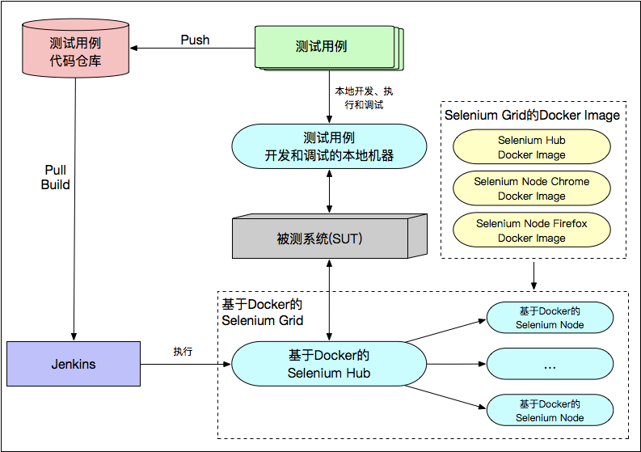

- 00 开篇词 从“小工”到“专家”，我的软件测试修炼之道.md.html
- 01 你真的懂测试吗？从“用户登录”测试谈起.md.html
- 02 如何设计一个“好的”测试用例？.md.html
- 03 什么是单元测试？如何做好单元测试？.md.html
- 04 为什么要做自动化测试？什么样的项目适合做自动化测试？.md.html
- 05 你知道软件开发各阶段都有哪些自动化测试技术吗？.md.html
- 06 你真的懂测试覆盖率吗？.md.html
- 07 如何高效填写软件缺陷报告？.md.html
- 08 以终为始，如何才能做好测试计划？.md.html
- 09 软件测试工程师的核心竞争力是什么？.md.html
- 10 软件测试工程师需要掌握的非测试知识有哪些？.md.html
- 11 互联网产品的测试策略应该如何设计？.md.html
- 12 从0到1：你的第一个GUI自动化测试.md.html
- 13 效率为王：脚本与数据的解耦 + Page Object模型.md.html
- 14 更接近业务的抽象：让自动化测试脚本更好地描述业务.md.html
- 15 过不了的坎：聊聊GUI自动化过程中的测试数据.md.html
- 16 脑洞大开：GUI测试还能这么玩（Page Code Gen + Data Gen + Headless）？.md.html
- 17 精益求精：聊聊提高GUI测试稳定性的关键技术.md.html
- 18 眼前一亮：带你玩转GUI自动化的测试报告.md.html
- 19 真实的战场：如何在大型项目中设计GUI自动化测试策略.md.html
- 20 与时俱进：浅谈移动应用测试方法与思路.md.html
- 21 移动测试神器：带你玩转Appium.md.html
- 22 从0到1：API测试怎么做？常用API测试工具简介.md.html
- 23 知其然知其所以然：聊聊API自动化测试框架的前世今生.md.html
- 24 紧跟时代步伐：微服务模式下API测试要怎么做？.md.html
- 25 不破不立：掌握代码级测试的基本理念与方法.md.html
- 26 深入浅出之静态测试方法.md.html
- 27 深入浅出之动态测试方法.md.html
- 28 带你一起解读不同视角的软件性能与性能指标.md.html
- 29 聊聊性能测试的基本方法与应用领域.md.html
- 30 工欲善其事必先利其器：后端性能测试工具原理与行业常用工具简介.md.html
- 31 工欲善其事必先利其器：前端性能测试工具原理与行业常用工具简介.md.html
- 32 无实例无真相：基于LoadRunner实现企业级服务器端性能测试的实践（上）.md.html
- 33 无实例无真相：基于LoadRunner实现企业级服务器端性能测试的实践（下）.md.html
- 34 站在巨人的肩膀：企业级实际性能测试案例与经验分享.md.html
- 35 如何准备测试数据？.md.html
- 36 浅谈测试数据的痛点.md.html
- 37 测试数据的“银弹”- 统一测试数据平台（上）.md.html
- 38 测试数据的“银弹”- 统一测试数据平台（下）.md.html
- 39 从小作坊到工厂：什么是Selenium Grid？如何搭建Selenium Grid？.md.html
- 40 从小工到专家：聊聊测试执行环境的架构设计（上）.md.html
- 41 从小工到专家：聊聊测试执行环境的架构设计（下）.md.html
- 42 实战：大型全球化电商的测试基础架构设计.md.html
- 43 发挥人的潜能：探索式测试.md.html
- 44 测试先行：测试驱动开发(TDD).md.html
- 45 打蛇打七寸：精准测试.md.html
- 46 安全第一：渗透测试.md.html
- 47 用机器设计测试用例：基于模型的测试.md.html
- 48 优秀的测试工程师为什么要懂大型网站的架构设计？.md.html
- 49 深入浅出网站高性能架构设计.md.html
- 50 深入浅出网站高可用架构设计.md.html
- 51 深入浅出网站伸缩性架构设计.md.html
- 52 深入浅出网站可扩展性架构设计.md.html
- 测试专栏特别放送 浅谈全链路压测.md.html
- 测试专栏特别放送 答疑解惑第一期.md.html
- 测试专栏特别放送 答疑解惑第七期.md.html
- 测试专栏特别放送 答疑解惑第三期.md.html
- 测试专栏特别放送 答疑解惑第二期.md.html
- 测试专栏特别放送 答疑解惑第五期.md.html
- 测试专栏特别放送 答疑解惑第六期.md.html
- 测试专栏特别放送 答疑解惑第四期.md.html
- 结束语 不是结束，而是开始.md.html
- 捐赠
41 从小工到专家：聊聊测试执行环境的架构设计（下）
你好，我是茹炳晟，今天我和你分享的主题是“从小工到专家：聊聊测试执行环境的架构设计（下）”。
在上一篇文章中，我介绍了测试基础架构的概念，以及早期的和经典的两种测试基础架构。在文章的最后，我提到经典的测试基础架构中采用的Selenium Grid方案，在测试用例的数量持续增加的情况下，会带来集群扩容、Jenkins Job臃肿不堪等诸多问题，因此我们考虑将Selenium Grid迁移到Docker，并且提供便于Jenkins Job管理的统一测试执行平台。
所以，今天的这篇文章，我就会围绕这些瓶颈以及对应的解决方案来展开。
基于Docker实现的Selenium Grid测试基础架构
随着测试基础架构的广泛使用，以及大量的浏览器兼容性测试的需求，Selenium Grid中Node的数量会变得越来越大，也就是说我们需要维护的Selenium Node会越来越多。
在Node数量只有几十台的时候，通过人工的方式去升级WebDriver、更新杀毒软件、升级浏览器版本，可能还不是什么大问题。但是，当需要维护的Node数量达到几百台甚至几千台的时候，这些Node的维护工作量就会直线上升。虽然，你可以通过传统的运维脚本管理这些Node，但维护的成本依然居高不下。
同时，随着测试用例数量的持续增长，Selenium Node的数量也必然会不断增长，这时安装部署新Node的工作量也会难以想象。因为，每台Node无论是采用实体机还是虚拟机，都会牵涉到安装操作系统、浏览器、Java环境，以及Selenium。
而目前流行的Docker容器技术，由于具有更快速的交付和部署能力、更高效的资源利用，以及更简单的更新维护能力，也就使得Docker相比于传统虚拟机而言，更加得“轻量级”。
因此，为了降低Selenium Node的维护成本，我们自然而然地想到了目前主流的容器技术，也就是使用Docker代替原本的虚拟机方案。
基于Docker的Selenium Grid，可以从三个方面降低我们维护成本：
由于Docker的更新维护更简单，使得我们只要维护不同浏览器的不同镜像文件即可，而无需为每台机器安装或者升级各种软件；
Docker轻量级的特点，使得Node的启动和挂载所需时间大幅减少，直接由原来的分钟级降到了秒级；
Docker高效的资源利用，使得同样的硬件资源可以支持更多的Node。也就是说，我们可以在不额外投入硬件资源的情况下，扩大Selenium Grid的并发执行能力。
因此，现在很多大型互联网企业的测试执行环境都在向Docker过渡。
而具体如何基于Docker搭建一套Selenium Grid，你可以参考我在第39篇文章《从小作坊到工厂：什么是Selenium Grid？如何搭建Selenium Grid？》中介绍的方法。由此可见，将原本基于实体机或者虚拟机实现的Selenium Grid改进成为基于Docker实现的过程也很简单、灵活。
如图1所示，就是一个基于Docker实现的Selenium Grid的测试基础架构。

图1 基于Docker实现的Selenium Grid测试基础架构
引入统一测试执行平台的测试基础架构
在实际的使用过程中，基于Docker的Selenium Grid使得测试基础架构的并发测试能力不断增强，也因此会有大量项目的大量测试用例会运行在这样的测试基础架构之上。
当项目数量不多，我们可以直接通过手工配置Jenkins Job，并直接使用这些Job控制测试的发起和执行。但是，当项目数量非常多之后，测试用例的数量也会非常多，这时新的问题又来了：
管理和配置这些Jenkins Job的工作量会被不断放大；
这些Jenkins Job的命名规范、配置规范等也很难实现统一管理，从而导致Jenkins中出现了大量重复和不规范的Job；
当需要发起测试，或者新建某些测试用例时，都要直接操作Jenkins Job。而这个过程，对于不了解这些Jenkins Job细节的人（比如，新员工、项目经理、产品经理）来说，这种偏技术型的界面体验就相当不友好了。
为此，我们为了管理和执行这些发起测试的Jenkins Job实现了一个GUI界面系统。在这个系统中，我们可以基于通俗易懂的界面操作，完成Jenkins Job的创建、修改和调用，并且可以管理Jenkins Job的执行日志以及测试报告。
这，其实就是统一测试执行平台的雏形了。
有了这个测试执行平台的雏形后，我们逐渐发现可以在这个平台上做更多的功能扩展，于是这个平台就逐渐演变成了测试执行的统一入口。
在这里，我列举了这个平台两个最主要的功能和创新设计，希望可以给你以及你所在公司的测试基础架构建设带来一些启发性的思考。
第一，测试用例的版本化管理。我们都知道，应用的开发有版本控制机制，即：每次提测、发布都有对应的版本号。所以，为了使测试用例同样可追溯，也就是希望不同版本的开发代码都能有与之对应的测试用例，很多大型企业或者大型项目都会引入测试用例的版本化管理。最简单直接的做法就是，采用和开发一致的版本号。
比如，被测应用的版本是1.0.1，那么测试用例的版本也命名为1.0.1。在这种情况下，当被测应用版本升级到1.0.2的时候，我们会直接生成一个1.0.2版本的测试用例，而不应该直接修改1.0.1版本的测试用例。
这样，当被测环境部署的应用版本是1.0.1的时候，我们就选择1.0.1版本的测试用例；而当被测环境部署的应用版本是1.0.2的时候，我们就相应地选择1.0.2版本的测试用例。
所以，我们就在这个统一的测试执行平台中，引入了这种形式的测试用例版本控制机制，直接根据被测应用的版本自动选择对应的测试用例版本。
第二，提供基于Restful API的测试执行接口供CI/CD使用。这样做的原因是，测试执行平台的用户不仅仅是测试工程师以及相关的产品经理、项目经理，很多时候CI/CD流水线才是主力用户。因为，在CI/CD流水线中，每个阶段都会有不同的发起测试执行的需求。
我们将测试基础架构与CI/CD流水线集成的早期实现方案是，直接在CI/CD流水线的脚本中硬编码发起测试的命令行。这种方式最大的缺点在于灵活性差：
- 当硬编码的命令行发生变化，或者引入了新的命令行参数的时候，CI/CD流水线的脚本也要一起跟着修改；
- 当引入了新的测试框架时，发起测试的命令行也是全新的，那么CI/CD流水线的脚本也必须被一起改动。
因此，为了解决耦合性的问题，我们在这个统一的测试执行平台上，提供了基于Restful API的测试执行接口。任何时候你都可以通过一个标准的Restful API发起测试，CI/CD流水线的脚本也无须再知道发起测试的命令行的具体细节了，只要调用统一的Restful API即可。
如图2所示，就是引入了统一测试执行平台的测试基础架构。
图2 引入统一测试执行平台的测试基础架构
基于Jenkins集群的测试基础架构
这个引入了统一测试执行平台的测试基础架构，看似已经很完美了。但是，随着测试需求的继续增长，又涌现出了新的问题：单个Jenkins成了整个测试基础架构的瓶颈节点。因为，来自于统一测试执行平台的大量测试请求，会在Jenkins上排队等待执行，而后端真正执行测试用例的Selenium Grid中很多Node处于空闲状态。
为此，将测试基础架构中的单个Jenkins扩展为Jenkins集群的方案就势在必行了。如图3所示，就是基于Jenkins集群的测试基础架构。
图3 基于Jenkins集群的的测试基础架构
因为Jenkins集群中包含了多个可以一起工作的Jenkins Slave，所以大量测试请求排队的现象就再也不会出现了。
而这个升级到Jenkins集群的过程中，对于Jenkins集群中Slave的数量到底多少才合适并没有定论。一般的做法是，根据测试高峰时段Jenkins中的排队数量来预估一个值。通常最开始的时候，我们会使用4个Slave节点，然后观察高峰时段的排队情况，如果还是有大量排队，就继续增加Slave节点。
测试负载自适应的测试基础架构
引入了Jenkins集群后，整个测试基础架构已经很成熟了，基本上可以满足绝大多数的测试场景了。但是，还有一个问题一直没有得到解决，那就是：Selenium Grid中Node的数量到底多少才合适？
- 如果Node数量少了，那么当集中发起测试的时候，就会由于Node不够用而造成测试用例的排队等待，这种场景在互联网企业中很常见；
- 而如果Node数量多了，虽然可以解决测试高峰时段的性能瓶颈问题，但是又会造成空闲时段的计算资源浪费问题。当测试基础架构搭建在按使用付费的云端时，计算资源的浪费就是资金浪费了。
为了解决这种测试负载不均衡的问题，Selenium Grid的自动扩容和收缩技术就应运而生了。
Selenium Grid的自动扩容和收缩技术的核心思想是，通过单位时间内的测试用例数量，以及期望执行完所有测试的时间，来动态计算得到所需的Node类型和数量，然后再基于Docker容器快速添加新的Node到Selenium Grid中；而空闲时段则去监控哪些Node在指定时间长短内没有被使用，并动态地回收这些Node以释放系统资源。
通常情况下，几百乃至上千台Node的扩容都可以在几分钟内完成，Node的销毁与回收的速度同样非常快。
至此，测试基础架构已经演变得很先进了，基本可以满足大型电商的测试执行需求了。测试负载自适应的测试基础架构，具体如图4所示。
图4 测试负载自适应的测试基础架构
如何选择适合自己的测试基础架构？
现在，我已经介绍完了测试基础架构的演进，以及其中各阶段主要的架构设计思路，那么对于企业来说，应当如何选择最适合自己的测试基础架构呢？
其实，对于测试基础架构的建设，我们切忌不要为了追求新技术而使用新技术，而是应该根据企业目前在测试执行环境上的痛点，来有针对性地选择与定制测试基础架构。
比如，你所在的企业如果规模不是很大，测试用例执行的总数量相对较少，而且短期内也不会有大变化的情况，那么你的测试基础架构完全就可以采用经典的测试基础架构，而没必要引入Docker和动态扩容等技术。
再比如，如果是大型企业，测试用例数量庞大，同时还会存在发布时段大量测试请求集中到来的情况，那么此时就不得不采用Selenium Gird动态扩容的架构了。而一旦要使用动态扩容，那么势必你的Node就必须做到Docker容器化，否则无法完全发挥自动扩容的优势。
所以说，采用什么样的测试基础架构不是由技术本身决定的，而是由测试需求推动的。
总结
在今天这篇文章中，我从测试基础架构演进的视角，和你分享了测试基础架构发展的前世今生。
首先，为了降低测试用例过多时Selenium Grid的维护成本，我们用Docker容器代替了经典测试基础架构中的实体机/虚拟机，形成了基于Docker实现的Selenium Grid测试基础架构。
而后，我们发现测试用例的数量达到一定规模后，管理和执行发起测试的Jenkins Job成了问题。于是，我们引入了一个基于GUI界面的测试执行平台，并在其上扩展了诸如测试用例版本化、提供基于Restful API的测试执行接口等功能。从而，形成了由这个统一测试执行平台发起测试的测试基础架构形态。
而为了进一步解决由单个Jenkins带来的系统瓶颈问题，我们过渡到了基于Jenkins集群的测试基础架构，通过多个同时工作的Jenkins Slave，解决了大量测试请求排队的问题。
随后，为了解决Selenium Grid中Node的数量到底多少才合适的问题，我和你谈论了创新设计的Selenium Grid的自动扩容和收缩技术。至此，测试负载自适应的测试基础架构也终于“千呼万唤始出来”了。
最后，我谈论了不同企业该如何选择最适合自己的测试基础架构的问题。这里，我强调了一定要根据测试需求选择测试基础架构，而不能一味地追求最新的技术。
我希望通过这种授人以渔的方式，可以帮你拓宽思路，并将测试基础架构的设计思路、思想，运用到你的实际工作中去。
思考题
其实，在我讲述的这个测试基础架构的设计和搭建过程中，还有很多可以优化和创新的点。你觉得哪些部分可以再优化呢？你还有哪些想法呢？
欢迎你给我留言，我们一起讨论。
© 2019 - 2023 Liangliang Lee. Powered by gin and hexo-theme-book.